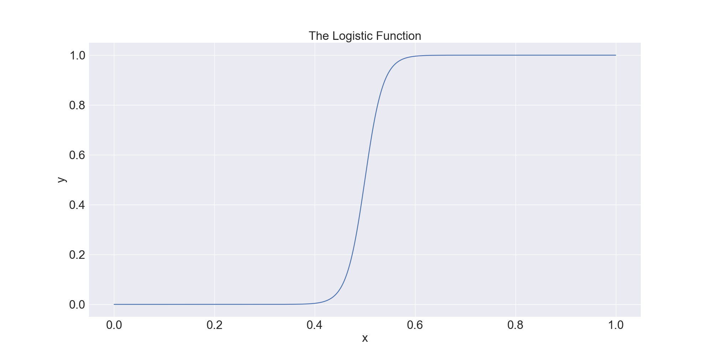
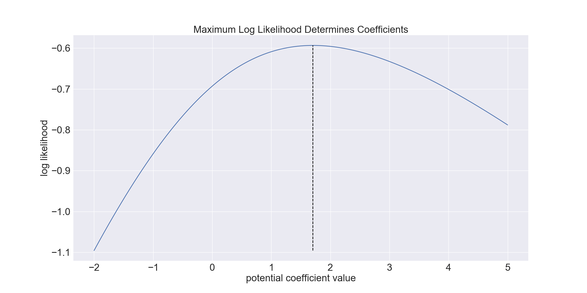

Classification¶
The goal of classification algorithms is to label data. Traditionally, this is done by training the algorithm on historic data with known labels.
Generic¶
These are functions, metrics, and plots that pertain to all classification algorithms.
Metrics¶
These are metrics for assessing the performance of classification algorithms.
|
Compute the accuracy of the model |
|
Compute the Akaike Information Criteria (AIC) |
|
Compute the Bayesian Information Criteria (BIC) |
|
Compute the confusion matrix |
|
Compute the f1 score |
|
Compute the Gini coefficient |
|
Compute the Kolmogorov-Smirnov (KS) test statistic to evaluate model performance |
|
A performance report for a model. |
|
Compute the precision of the model |
|
Compute the recall |
|
Compute false positive rates and true positives rates for the receiver operating characteristic |
Class¶
|
GenericModel class. |
Logistic Regression¶
Logistic regression is a classification algorithm that solves for the function \(y(x) = \frac{1}{1+e^{-\beta x}}\), where \(y\) is the outcome, \(\beta\) is a set of coefficients, and \(x\) are predictor variables.
An example of the function \(y(x)\) is presented below. Note that this function is particularly suited for classification, since two states, \(y(x) = 0\) and \(y(x) = 1\) are separated by a sharp transition, the decision boundary.
{kind=link}
Fitting the Model¶
The coefficients \(\beta\) are chosen such that the log likelihood is maximized. The likelihood function is the joint probability distribution of coefficients \(\beta\) with each outcome. Intuitively, the maximization of this function is equivalent to saying that we want to choose \(\beta\) such that the predicted probability of success is highest when samples are actually successfully and the predicted probability of failure is highest when samples are actually failures.
For the case where we have a logistic function with only 1 variable (and no intercept), we can visualize the coefficient versus the log likelihood on a 2D plane. The maximum of the function, as depicted with the dashed black line, is the most suitable for the modeled data.
{kind=link}
Although it looks easy to identify the coefficients from maximum log likelihood as above, in practice the number of predictive variables can be high leading to a complicated likelihood function. Therefore, the best bet is to use optimization algorithms to solve for the coefficients.
Note that the cost function \(J = \frac{1}{2}(y - \hat{y})^2\), where \(y\) is the predicted outcome and \(\hat{y}\) is the true outcome, presents an equivalent way of expressing how coefficients \(\beta\) are selected.
Class¶
|
The class |